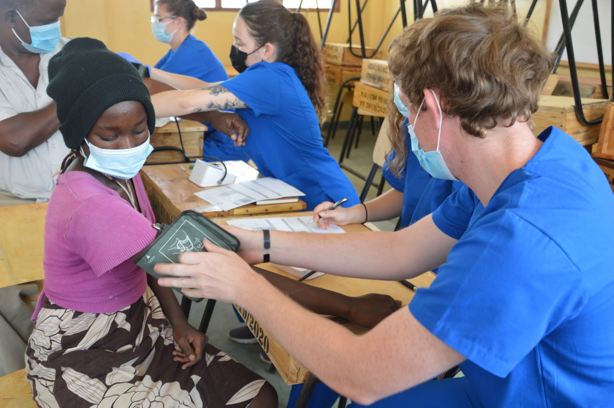

Well, as soon as I graduated high school, I had no idea what I wanted to do or where I wanted to go. BUT I knew I wanted to do SOMETHING, and that something turned out to be the Marine Corps where I would become a Combat Engineer!
I thought every aspect of the job was interesting, but one moment I came to the realization that I wanted more. This is the moment where I decided to pursue a career as a physician, specifically a specialization in neurosurgery as the brain has always interested me, and I wanted to strive for something challenging yet rewarding.
I started at a lesser known school, but I gave it my absolute all and transfered to Emory University, my dream school as it was known for it's pre-medicine program and medical school.
As time passed, I gained a great deal of experiences that I will cherish throughout my life. The lifestyle I was living though wasn't feasible long-term as it took a toll on my physical and mental well-being. I knew I needed a change so I took a year off to focus on myself, TRAVEL, and brainstorm my next pursuit. I landed on the tech space and ever since I have been fully immersed in my studies in web development!
My past experiences turned me into the person I am today and I am entirely grateful Each experience played it's part in developing useful skills that I can apply within the workforce, especially in the tech space as a Technical Consultant.
Whenever I go into something, I tend to dream BIG so my goals are ambitious, but I believe nothing is out of reach if you put enough heart and soul into what you do.
Acquire a role in Software Engineering/Technical Consulting where I can learn and grow with my peers and superiors and develop my existing skills further.
Create an ambitious machine learning application that outperforms OpenAI's chatGPT, yes i know...but why not?
Lately, I haven't had time to enjoy my interests as much, but I did develop a new and overwhelming interest in coding and am happy spending my time developing my skills and progressing! But other than that...
Some fun facts...
Well, That is me in a nutshell! I hope you enjoyed my story. Thank you for taking the time reading my journey, and learning a little about me!